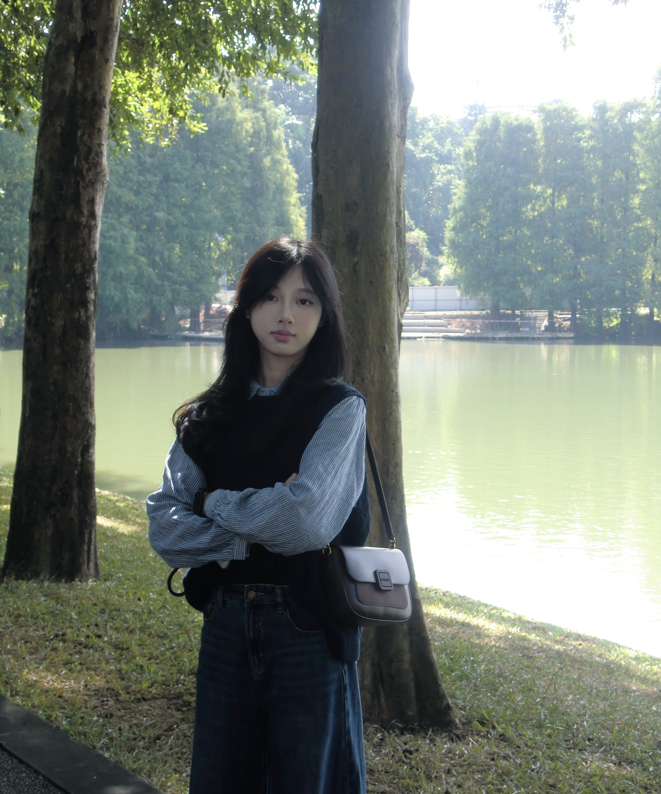

Designin motion.
浏览作品 ↗你好，我是周颖。
从信息，到体验。

从用户需求、信息架构与交互流程出发，探索清晰、自然的产品体验。
就读于广东技术师范大学视觉传达设计专业，设计实践覆盖 AI 珠宝定制、职业教育 Web 平台与适老化健康管理 App。
UI / UXWeb & AppAI 辅助设计
教育 / 2023—2027
广东技术师范大学
视觉传达设计
实习经历
渤格循环科技有限责任公司
UI/UX 设计实习生 · Naro 娜渃
广州义义科技有限公司
品牌视觉设计实习生 · IP与品牌延展
设计工具
Figma / Photoshop / Illustrator
After Effects / TouchDesigner